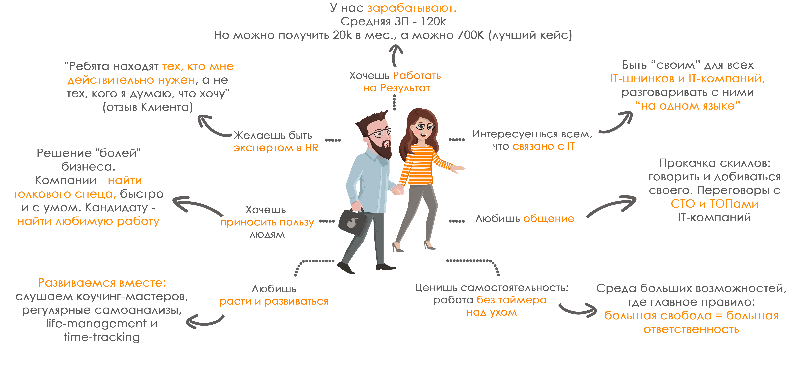

Возможные позиции в нашей команде
Отдел рекрутмента

Отдел Развития бизнеса

Проектный отдел

Рекрутер
Рекрутер-консультант
Тимлид
Руководитель отдела
Сейлз
Руководитель группы продаж
Руководитель отдела
Партнер
Менеджер проектов
Руководитель проектов
Партнер в дочернем бизнесе
У нас есть свой
отдел продаж и аккаунтинга
счастья клиентов, а также подразделение проектного менеджмента.
Однако главный мотор нашего агентства, на котором держится
бизнес, и самый многочисленный отдел компании - это рекрутеры.
Так или иначе любая работа и должность в нашей компании
связана с наймом, поэтому подробнее раскроем тему работы у нас
на именно на примере этой должности.
IT-рекрутер
Что делать: устраивать на работу специалистов в сфере IT: искать резюме, звонить, проводить собеседования
А если поподробней?
Любую работу можно разложить на простые действия, а также примерно оценить процентное соотношение - сколько времени тратится на каждое из них
Поиск резюме соискателей
Самая медитативная задача. Здесь необходимо хорошо разбираться в IT и уметь составить правильный поисковый запрос. Поиск ведется в нашей базе и на работных сайтах. Иногда это бывает просто, а иногда похоже на финал кубка Яндекса по поиску :)
20%
Общение с заказчиками
Самая важная задача.С нее начинается и заканчивается наша работа. Уметь представить кандидата - не упустить важных плюсов и объяснить пробелы в резюме. Настоять на знакомстве с кандидатом, если уверен, что он подходит на вакансию. Наладить дружеские отношения.
20%
Звонки соискателям
Самая сложная задача. Надо за короткий звонок продать соискателю вакансию, запомниться ему, выяснить все, что важно в его резюме и главное, всегда быть в хорошем настроении :) А еще звонков должно быть много - это основа твоего заработка!
30%
Общение с тимлидом
Самая полезная задача. Тимлид - это и учитель, и критик, и советник, и твоя совесть. Человек, благодаря кому ты сможешь развиваться гораздо быстрее, чем в одиночку. Главное - хотеть развиваться и зарабатывать ;)
5%
Проведение собеседований
Самая длительная задача. Момент, когда мы используем свои скилы на полную - и знание IT, и умение наладить контакт, и опыт вытягивания информации, и знание людей. Соискателя надо "узнать с пелёнок", оставив у него лучше впечатление о нашем агентстве!
20%
Обучение
Самая очевидная задача :) Ведь в каждом из компонентов рецепта надо знать IT, или рекрутмент, или уметь быть эффективным… А значит - надо посещать все семинары и задавать вопросы!
5%
Признаки нашего человека
Так или иначе любая работа и должность в нашей компании связана с наймом, поэтому подробнее раскроем тему работы у нас на именно на примере этой должности.
IT-рекрутер
Что делать: устраивать на работу специалистов в сфере IT: искать резюме, звонить, проводить собеседования
А если поподробней?
Поиск резюме соискателей
Самая медитативная задача. Здесь необходимо хорошо разбираться в IT и уметь составить правильный поисковый запрос. Поиск ведется в нашей базе и на работных сайтах. Иногда это бывает просто, а иногда похоже на финал кубка Яндекса по поиску :)
Проведение собеседований
Самая длительная задача. Момент, когда мы используем свои скилы на полную - и знание IT, и умение наладить контакт, и опыт вытягивания информации, и знание людей. Соискателя надо "узнать с пелёнок", оставив у него лучше впечатление о нашем агентстве!
Проведение собеседований
Самая длительная задача. Момент, когда мы используем свои скилы на полную - и знание IT, и умение наладить контакт, и опыт вытягивания информации, и знание людей. Соискателя надо "узнать с пелёнок", оставив у него лучше впечатление о нашем агентстве!
Общение с заказчиками
Самая важная задача.С нее начинается и заканчивается наша работа. Уметь представить кандидата - не упустить важных плюсов и объяснить пробелы в резюме. Настоять на знакомстве с кандидатом, если уверен, что он подходит на вакансию. Наладить дружеские отношения.
Общение с тимлидом
Самая полезная задача. Тимлид - это и учитель, и критик, и советник, и твоя совесть. Человек, благодаря кому ты сможешь развиваться гораздо быстрее, чем в одиночку. Главное - хотеть развиваться и зарабатывать ;)
Обучение
Самая очевидная задача :) Ведь в каждом из компонентов рецепта надо знать IT, или рекрутмент, или уметь быть эффективным… А значит - надо посещать все семинары и задавать вопросы!

ПЛЮСЫ РЕКРУТМЕНТА
- Драйв и движуха через край. Жизнь вокруг кипит так, что конец рабочего дня наступает незаметно и даже не желанно.
- Постоянное обучение и развитие. У личного куратора и на групповых тренингах.
- Работа на результат. В КА идут те, кто хочет через 4-8 мес. зарабатывать 100-150k/мес.
- У нас работают исключительно люди с “рекрутерской” жилкой, с высоким уровнем осознанности и кайфующие от постоянного развития.Вокруг люди с высоким уровнем осознанности и кайфцющие от постоянного развития.
- Полезная работа, которая реально делает жизнь людей лучше. Серьезно, мы здесь не только про хорошо заработать, а еще и хорошее дело делаем - помогаем людям найти любимую работу.
- Приятный график. Первое время нужно быть пунктуальным 10-19, далее график гибкий. Для Джедаев - свободный
МИНУСЫ РЕКРУТМЕНТА
- Нервная работа. Большие эмоциональные нагрузки.
- Хороший кандидат иногда может приехать на собеседование в 8 утра или 8 вечера.
- Постоянное обучение и развитие. Прокрастинация не пройдет.
- Прямые фидбеки о плюсах и минусах - именно они ведут к быстрому и крутому росту.
- Нет стабильного дохода. Слегка расслабился - слегка и заработал. Может быть просадка на старте.
ПЛЮНУСЫ
то, что для кого-то является плюсом, а для других - минусом
- Очень высокий темп. Множество вызовов - шансов все зафакапить или проявить себя.
- Работа, где реально много общения с людьми. С нами просто не сможет выжить человек, который хочет делать всегда понятную работу без постоянных челленджей и бэклога из 500 задач.
- Все обучение в перемешку с практикой. Нет времени расслабиться или взять паузу - только вперед и в темпе.
- Финансовый результат сильно зависит от качества работы и, порою, от удачи.
- Обнимающийся со всеми гендир в маске Магистра Йоды… тебе решать, как к этому относиться. Любителям костюмов рядом с фанатами тапочек и кроксов будет явно не комильфо.
Звездная команда
Тут могла быть ваша реклама
Тут могла быть ваша реклама
Тут могла быть ваша реклама
45
человек в команде
Тут могла быть ваша реклама
Тут могла быть ваша реклама
300
закрытых вакансий в год
Тут могла быть ваша реклама
16
детей в команде
Тут могла быть ваша реклама
Тут могла быть ваша реклама
Тут могла быть ваша реклама
Тут могла быть ваша реклама
Тут могла быть ваша реклама
2
месяца средний срок закрытия вакансий
Тут могла быть ваша реклама
Тут могла быть ваша реклама
Тут могла быть ваша реклама
Тут могла быть ваша реклама
Тут могла быть ваша реклама
Тут могла быть ваша реклама
Тут могла быть ваша реклама
Тут могла быть ваша реклама
26
лет средний возраст
Вакансии в Нашей Команде
Отдел продаж
Тут наши аккаунт-менеджеры чутко следят за счастьем наших
клиентов и снабжают нас только проверенным заказами в хороших
компаниях с высоким чеком.
Структурно отдел продаж является отдельным подразделением
компании, со своей кассой, большой автономией, блэк-джэком и …
ну, вы поняли.
Отдел рекрутмента
Именно эти ребята делают так, чтобы топливо в виде полученных
заказов преобразовалось в энергию для бизнеса в виде высоких
гонораров за успешную работу.
Именно наши рекрутеры не стесняются написать первыми любому
человеку с вопросами “А сколько получали на прошлом месте работы
и сколько хотите сейчас?”
Именно наши рекрутеры являются самыми высокооплачиваемыми
сотрудниками, ставя рекорды по ЗП в 700K+, и именно благодаря их
работе наши заказчики возвращаются к нам и рекомендуют друзьям
все чаще и чаще. У тебя есть шанс стать частью нашей звёздной
команды и одним из них.
Проектный отдел
Здесь наши менеджеры проектов и аналитики занимаются
исследованиями вопросов оптимизации работы существующих бизнесов
и разрабатывают новые инновационные продукты. Задачи бывают как
внутренние в интересах наших компаний, так и внешние - крупные
HR-консалтинговые проекты для наших Заказчиков, например.
Также отсюда выходят идеи и продукты для всех наших дочерних
направлений бизнеса, которые впоследствии становятся
самостоятельными компаниями.
Командная жизнь.Тусим.
Человек проводит на работе треть жизни, поэтому не только дело должно быть любимым, но и твоя команда должна радовать тебя каждый день! А еще, "Кто хорошо работает - тот хорошо отдыхает". Работаем мы офигенно, потому отдыхаем еще круче!
Тут мог быть ваш текст
1
Тут мог быть ваш текст
1
Тут мог быть ваш текст
1
Тут мог быть ваш текст
1
А видяшку можно было бы и по размеру подогнать, да
Тут мог быть ваш текст
1
Тут мог быть ваш текст
А ТУТ ЕЩЕ БОЛЬШЕ ТЕКСТА МОГЛО БЫ БЫТЬ
Тут мог быть ваш текст
1
Тут мог быть ваш текст
1
Тут мог быть ваш текст
1
Тут мог быть ваш текст
1
Тут мог быть ваш текст
1
О нас говорят
Иван Жучков
PM, работает в компании год
Находясь в Star-Staff, ты можешь быть точно уверен, что тебя услышат. Культура обратной связи и непрерывного улучшения чувствуется при работе с каждым ТОПом компании. Для меня это лучший плацдарм для личностного и профессионального роста.Мария Князева
Рекрутер, работала в компании 2 месяца
Компания хороша для тех, кто хочет роста и развития. Если ты не готов обучаться и выходить из зоны комфорта - тебе не по пути с этими ребятами.Валентин Ливкин
Клиент. СТО IcoLab
Ребята находят тех, кто мне действительно нужен, а не тех, кого я думаю, что хочу.Андрей Веснин
Рекрутер, работал в компании 2 года
Star-Staff – такое место, куда можно прийти, не имея опыта работы нигде, но уже через несколько месяцев спрос на тебя на рынке будет ощутимый. Происходит это потому, что из тебя делают не просто «ресечера», а полноценную боевую единицу, рекрутера, способного проводить собеседования, консультировать заказчика и проводить экспертизу рынка. Не все сразу, конечно же: начинать придется с простых вакансий, вести их под присмотром тимлидов, ошибаться, нервничать, тормозить на собеседованиях, тонуть в планировании своего дня, но результат того стоит.Егор Хмелев
Клиент.СТО Sweatcoin
Одно из немногих агентств на рынке, которое не сухо ищет вам сотрудников, а заботится о своих клиентах, пытается до мелочей понять потребности и профиль кандидатов, и все это происходит в приятной дружеской атмосфере.